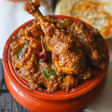

Chettinad chicken

Chettinad chicken
This is one of the best chicken recipes to try at home. A popular chicken curry, cooked in a peppery authentic chettinad paste laced with coconut and onions. Bring some magic to your palate and heaven to your taste buds with this southern style chicken dish.
Ingredients
- 500 gms chicken
- 75 ml oil
- 150 gms onions
- 100 gms tomatoes
- 2 gms cinnamon sticks
- 2 gms cloves
- 2 gms cardamoms
- 5 gms cumin
- 2 gms curry leaves
- 10 gms turmeric powder
- salt
- 25 gms coriander leaves
For Paste:
- 100 gms onions
- 50 gms ginger
- 50 gms garlic
- 50 gram fennel seeds
- 20 gms cumin seeds
- 25 gms peppercorns
- 10 gms red chillies
- 100 gms coconut
Steps
- Grind the ingredients for the paste.
- Clean and cut the chicken into 16 pieces. Marinate the chicken with the paste.
- Chop the tomatoes, coriander leaves and the onions.
- Heat oil and add the cinnamon, cardamom, cloves and cumin, saute.
- Add the chopped onions and the curry leaves. Saute until the onions are golden.
- Add the tomatoes and saute for 5 minutes.
- Add the marinated chicken and turmeric powder. Saute for 10 minutes, sprinkling water at intervals.
- Add enough salt, cover with a lid and cook until done. Add more chilli or pepper if required.
- Serve garnished with coriander leaves.